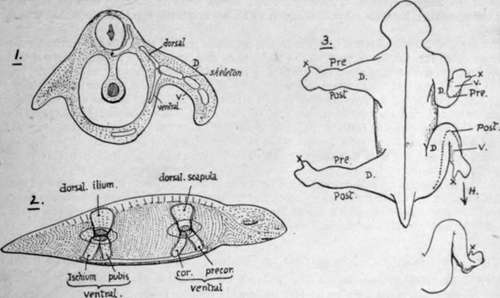

Chapter IV. Limbs: Upper Limb I. The Limb-Girdles And Skeleton Of The Free Limbs
Description
This section is from the book "The Anatomy Of The Human Skeleton", by J. Ernest Frazer. Also available from Amazon: The anatomy of the human skeleton.
Chapter IV. Limbs: Upper Limb I. The Limb-Girdles And Skeleton Of The Free Limbs
The term " limb " is popularly applied to one of the appendages that are freely movable on the " body " and distinct from it, but it must not be forgotten that these are only what one may call " free " limbs, and are carried by a more fixed part related to them and embedded in the walls of the trunk. So in dealing with the skeleton of the hmbs we can talk of that of the free hmb, and that of the embedded portion with which the skeleton of the free limb articulates.
These embedded parts, really applied to the surface of the proper body-wall, constitute the pectoral and pelvic girdles : in the former the skeleton is capable of movement and not firmly articulated with the trunk skeleton, but in the latter, where stabihty and strength are necessary for carrying the weight of the body, the girdle is firmly fixed to the sacrum and forms with it the bony pelvis.
The pectoral girdle consists of Scapula and Clavicle on each side : the clavicle is the only bony connection between the scapula and the trunk skeleton, articulating with the sternum. The upper arm, the proximal segment of the free limb, has the humerus as its bony skeleton, articulating with the Scapula and carrying the bones of the forearm (radius and ulna) at its distal end.
The pelvic girdle is formed by two innominate bones which articulate with each other ventrally and with the sacrum dorsally. Each os innominatum is composed of three bones joined together, the Ilium, Ischium, and Pubis, and has a deep articular surface (acetubulum) which carries the femur that supports the thigh. The Ilium is on the dorsal and upper side of the acetabulum, the Ischium and Pubis on its ventral side, and the junction of one innominate bone with the other is effected by the meeting of their pubic portions in the symphysis. All the three parts of the bone are concerned in forming the acetabulum.
The resemblance in details between the upper and lower limbs are matters of common observation, and the general resemblance between their bony parts is very apparent. The meaning of such likeness and the nature of the relationship and morphological identities of the limbs, if any, has been the subject of much controversy and many theories, and appears likely to remain in that position for an indefinite time : those interested should consult the special works that deal with the matter, but some of these views will be shortly spoken of when considering the individual bones of the limbs.
The mode of development of the vertebrate limbs is hidden in the aeons that have passed since the earliest chordate came into existence, but we may, perhaps, assume that they were evolved from lateral appendages used by the hypothetical early vertebrate as a means of moving through the water in which he is supposed to have dwelt.
As the bulk of the animal increased, or the size of the appendages, it became necessary to render them firmer by the growth of a skeletal frame-work in them, and, as a result of the continued operation of such causes, to provide a more resistant basis in the wall of the body from which the enlarged and strengthened appendage could act with greater force : thus we have a skeletal basis of a free limb movable on a skeletal support embedded in the body-wall.
Since such limbs were serving the same purpose (with very slight differences as the result of position), the limbs and their skeleton would develop on more or less parallel lines, and their increasing strength would be correlated with parallel growth of their embedded support. We are only concerned with a theoretical extension dorsally and ventrally on the wall of the body, as shown in Fig. 49, so that we would obtain the rudiments of pelvic and pectoral arches similar in structure and consisting of dorsal and ventral parts supporting at their junction the skeleton of the free limb. The ventral portion was double, consisting of two bars articulating perhaps with a central ventral part of the trunk skeleton (? sternum) or with their fellows of the opposite side : thus greater stability was secured for the action of the free limb. The dorsal part was broad and single and could reach the dorsal skeleton of the trunk by extension. In this we have the foreshadowing of the human pelvic arch at least, the dorsal ilium and the two ventral bars, pubis and ischium : the pectoral girdle had a dorsal " scapula," and ventral " coracoid " and " pre-coracoid " bars.
If we now imagine that these strengthened limbs are being used for purposes of support on land as well as propulsion in the water, we can understand that the slight differences in the conditdons of action of the limbs will begin to graft differences of detail on the fundamentally similar structure of these parts, and these will be accentuated as the specialisation in function of the fore limbs progresses. Thus we might consider the fixation of the pelvic girdle and great mobility of the pectoral girdle as being characters secondarily acquired, in common with lesser differences in structural detail, and grafted on the fundamentally similar construction of the limbs.
Fig. 49.-1 and 2 are intended to illustrate the hypothetical growth of the bony supports of the limb in the vertebrates. In 1 a short lateral appendage is shown on the left side, made more useful by thickened and resistant tissues in its centre ; on the right side the limb is lengthened and in consequence its supports are strengthened and made bony, these are segmented to allow of movement in the limb, and a point d'appui for the action of the whole limb is provided in the form of a skeletal support in the body-wall. Such supports extend dorsally and ventrally. 2 shows the animal from the side with the dorsal and ventral extensions in the body-wall in the pectoral and pelvic regions ; the limits of the limb attachments are seen and the shaded areas at the dorso-ventral junctions mark articular surfaces for the skeleton of the free limbs. 3 contrasts the corresponding parts of the two limbs. Dorsal view. Pre., Post, prcaxial and postaxial borders; D. dorsal aspect ; A', thumb and big toe. The common type is altered on the right as the limbs come into position, and the ventral surface, V'., looks forward in the fore limb and back in the hind limb. H. points to the form of the human (or plantigrade) foot derived from this.
Continue to:
- prev: Sternum. Continued
- Table of Contents
- next: Limbs: Upper Limb I. The Limb-Girdles And Skeleton Of The Free Limbs. Continued